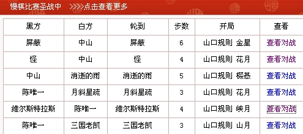
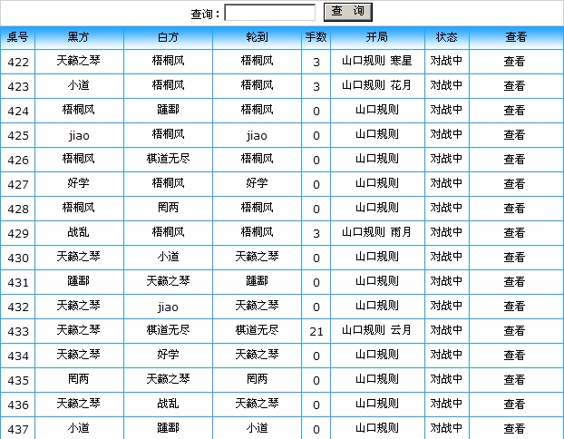
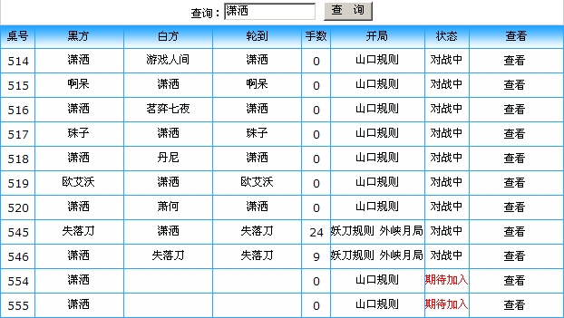
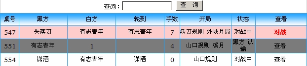
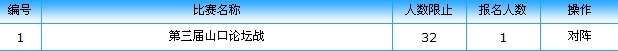
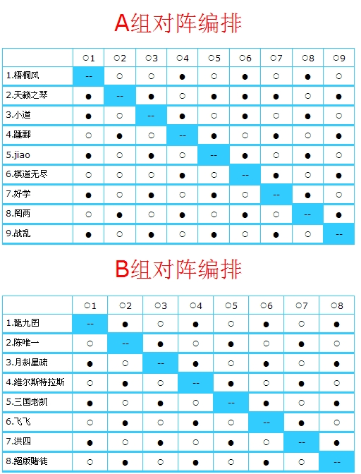
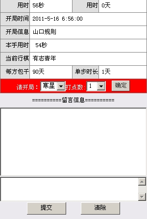
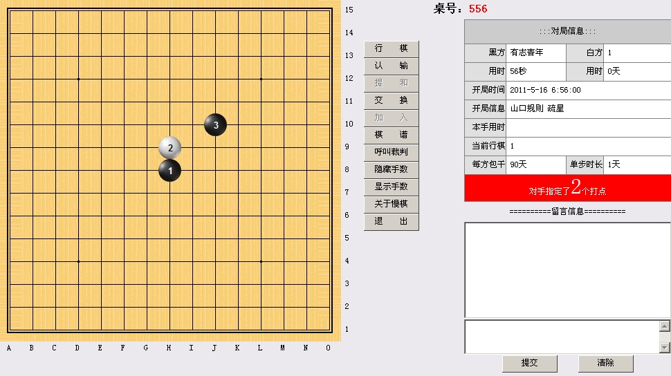
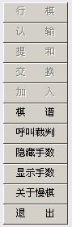

爱五子棋网慢棋系统功能说明
#1 <font color="red">爱五子棋网慢棋系统功能说明</font> 作者：有志青年 发表时间：2011-5-16 7:30:35
一、进入慢棋系统
进入慢棋系统的途径有二个：
本站论坛中任意一个页面顶端第二个汉字“慢”均可进入
论坛首页，如下图所示中的链接可进入

是否需要登录？
如果你在论坛没有登录，直接进入慢棋系统，那是需要登录的。建议：先在论坛登录，之后进入慢棋系统。
二、我是旁观者，慢棋系统中对局好多哟
此次开发的慢棋系统正式投入使用后，仅供有组织的比赛使用，例如某些家族的交流赛，不接受个人创建个别的对局。因此你点击查看“所有棋局”，会看到长长地一串对局列表，如下图：

此时，你关注的对象是潇洒，那就查询“潇洒”，结果如下：

三、我是对局者，会不会忘了哪局没有下
对局者进入后，可以如上述第二部分一样查看某人的对局，更多的是关注自己的对局情况。点击左列菜单中“我的棋局”，此时，你看到的列表均是与你有关的对局，其中用红色标注的，是轮到你行棋的对局，用灰色表示已经结束的对局。

四、既然是比赛，那其他选手的情况怎么看
慢棋系统自动编排单循环对阵表，从对阵表中即可看到棋手的情况，点击左列菜单中“赛事列表”

这里给出了现有的赛事，点击进入，即可看到单循环对阵表

这个表，你横着看，如“B组陈唯一”，他（此时竖着看）对阵“01龍九囝”时是执白，后续类推，点击也可进入对应棋局。
五、进入棋局后，我能干什么
这个问题得分三种角色：旁观者、轮走方、非走方来描述
先说旁观者吧，你只能看，还不能说，留言对你来说也无效。但你可以在棋谱上打谱（随你咋样落子，鼠标左键落子，右键提子）。
轮走方和非走方可以互相留言、可以呼叫裁判、可以提和、可以认输……
六、这个慢棋，到底怎么玩
1、假先方：进入对局后，你首先看到如下图。干啥呢？指定开局及打点，之后你“确定”就算完成了！你说盘面上没反应？恩，确实没有显示，没关系，你的开局任务已经完成。

2、假后方：对方开局后，轮到你行棋了，此时你可以走白四，也可以提出交换，如下图 。

3、行棋，点击盘面落子，之后点击“行棋”按钮确认。到第五点是多打。
4、功能按钮说明：对局的终止有四个途径：某方认输（推荐使用）、某方超时系统自动判负、某方提和得到对方同意、某方呼叫裁判，之后裁判来判定。

七、有啥好玩的吗？
可以对对局双方的胜负进行竞猜，每注20个金币，最终系统收取10%，被竞猜者获得10%，剩下的由竞猜正确者平分，盘面六子之前可以竞猜。
［此帖子已被 有志青年 在 2011-5-16 8:13:42 编辑过］
［此帖子已被 有志青年 在 2011-5-16 8:16:22 编辑过］
［此帖子已被 有志青年 在 2011-5-16 8:27:05 编辑过］
［ 逆刃 于 2011-5-16 9:43:46 时花20金币送鲜花一朵］
#2 Re:爱五子棋网慢棋系统功能说明 作者：松痕 发表时间：2011-5-16 7:51:30
支持。。。。。#3 Re:爱五子棋网慢棋系统功能说明 作者：冥王哈迪斯 发表时间：2011-5-16 11:46:31
弱弱的问一句。。报名已经结束了嘛？